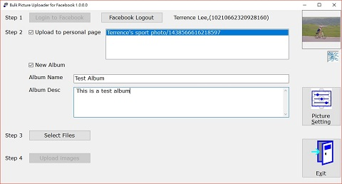
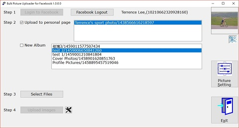

Facebook Upload Destination
Bulk Photo Uploader could upload photo to (1) a new album on your wall, (2) an existing album, (3) a new album on your Personal Page, or (4) existing album on personal page
Different destination will have different process.
1. New Album
System default is to create New Album. You need to keep unchecked
and checked.
Input the album name and description accordingly. Then you could
go to next step: Select
Files
2. Existing Album
Uncheck the and
you could see a list of albums on your wall. Click one to
select.
3. New Album on Personal Page
Check the box to get a list Personal Page. Select the one you want to upload to.
Then the next step is the same as upload to new album.
4. Existing Album on Personal Page
Check the box to get a list Personal Page. Select the one you want to upload to.
Uncheck the and you could see a list of albums on your wall. Click one to select.
